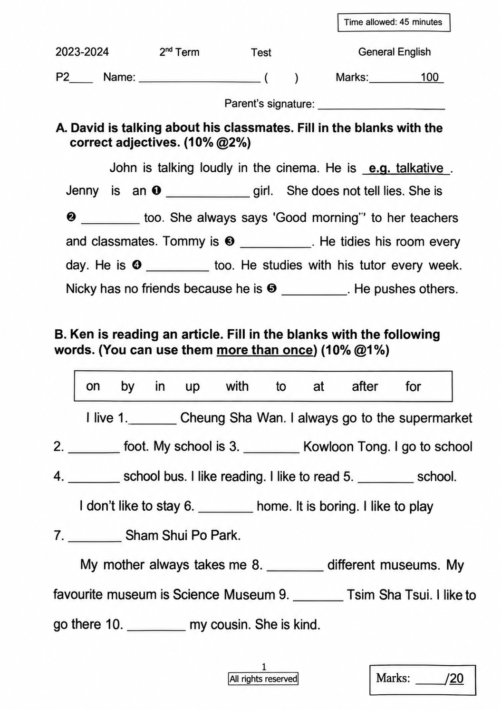
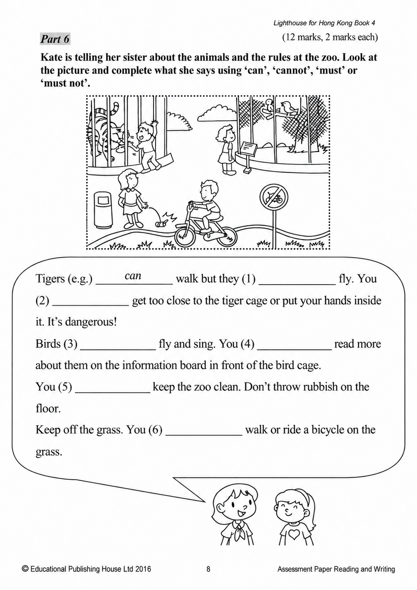
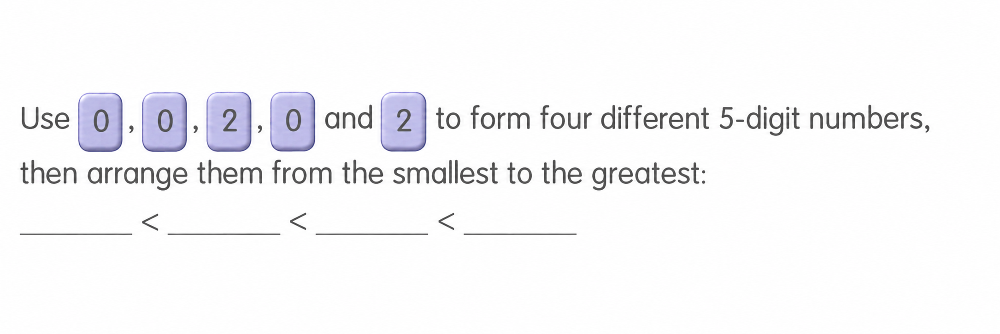

已掌握
| # | 中文意思 | 例句/提示 | 英文默写 | 已掌握 |
|---|---|---|---|---|
| noun 名词 | ||||
| 1 | 礼物 | I got a from my mother. | ||
| 2 | 皮毛 | The rabbit has soft . | ||
| 3 | 小组 | We work in a . | ||
| 4 | 家务 | I help my parents with the . | ||
| 5 | 双胞胎 | My brother and I have the same birthday. | ||
| 6 | 斑马 | The has black and white stripes. | ||
| 7 | 周四 | We have art on . | ||
| 8 | 周六 | I play football on . | ||
| 9 | 顺序 | Please put them in . | ||
| 10 | 角色 | I have a in the play. | ||
| verb 动词 | ||||
| 11 | 称重 | We the bag. | ||
| 12 | 带有/搬运 | I my bag. | ||
| phrase 短语 | ||||
| 13 | 晚安 | I say before bed. | ||
| adjective 形容词 | ||||
| 14 | 流行的 | This song is with children. | ||
| 15 | 特别喜欢的 | My sport is basketball. | ||
| 16 | 正确 | This answer is . | ||
| noun/verb 名词/动词 | ||||
| 17 | 锻炼 | is good for your health. | ||
| adjective/interjection 形容词/感叹词 | ||||
| 18 | 欢迎 | to our school. | ||
| verb/noun 动词/名词 | ||||
| 19 | 旅行 | We during the holiday. | ||
| uncategorized 未分类 | ||||
| 20 | 隐藏 | The children behind the tree. | ||
| # | 单词/词组 | 中文意思 | 例句/说明 | 已掌握 |
|---|---|---|---|---|
| adjective 形容词 | ||||
| 1 | wrong | The answer is wrong. | ||
| 2 | safe | This place is safe. | ||
| 3 | thick | This book is thick. | ||
| 4 | different | Our bags are different colours. | ||
| 5 | sad | I feel sad because I miss my friends. | ||
| noun 名词 | ||||
| 6 | boxing | Boxing is a sport. | ||
| 7 | stairs | Please walk up the stairs. | ||
| 8 | goldfish | The goldfish swims in the bowl. | ||
| 9 | mushroom | A mushroom is a kind of food. | ||
| 10 | postman | The postman brings letters. | ||
| 11 | salad | I had salad for lunch. | ||
| 12 | clown | The clown made us laugh. | ||
| 13 | pilot | The pilot flies a plane. | ||
| 14 | clinic | The doctor works in a clinic. | ||
| 15 | musician | The musician plays music. | ||
| 16 | festival | We go to the festival. | ||
| 17 | spelling | I checked the spelling of the word. | ||
| 18 | cafe | We had drinks at a cafe. | ||
| noun phrase 名词短语 | ||||
| 19 | high jump | He can do the high jump. | ||
| 20 | Sports Day | Sports Day is on 12th June at 1:30 p.m. | ||
| 21 | a spoon | Use a spoon to serve the soup. | ||
| 22 | a towel | He gave her a towel. | ||
| 23 | a watch | I gave him a watch. | ||
| 24 | Computer Studies | Gopal is good at Computer Studies. | ||
| verb phrase 动词短语 | ||||
| 25 | play mini golf | I like to play mini golf at the weekend. | ||
| 26 | look at shells | We look at shells on the beach. | ||
| 27 | take photos | We take photos at the farm. | ||
| 28 | eat rice dumplings | We eat rice dumplings at the Dragon Boat Festival. | ||
| 29 | watch a clown show or a magic show | We can watch a clown show or a magic show at the party. | ||
| uncategorized 未分类 | ||||
| 30 | thief | The thief stole a bike. | ||
| # | 中文意思 | 例句/提示 | 英文默写 | 已掌握 |
|---|---|---|---|---|
| time/date 时间日期 | ||||
| 1 | 十一月 | is the eleventh month. | ||
| time unit 时间单位 | ||||
| 2 | 分 | A has 60 seconds. | ||
| directions 方向 | ||||
| 3 | 北 | is a direction. | ||
| numbers 数字 | ||||
| 4 | 4 | is 4. | ||
| 5 | 5 | is 5. | ||
| 6 | 7 | is 7. | ||
| 7 | 9 | is 9. | ||
| 8 | 10 | is 10. | ||
| 9 | 11 | is 11. | ||
| 10 | 17 | is 17. | ||
| 11 | 千 | One is 1000. | ||
| solid shape 立体图形 | ||||
| 12 | 三棱锥 | A has triangular faces. | ||
| 13 | 圆柱 | A has two circular faces. | ||
| plane shape 平面图形 | ||||
| 14 | 正方形 | A has four equal sides. | ||
| 15 | 长方形 | A has four right angles. | ||
| # | 单词/词组 | 中文意思 | 例句/说明 | 已掌握 |
|---|---|---|---|---|
| numbers 数字 | ||||
| 1 | 3-digit number | A 3-digit number has three digits. | ||
| 2 | approximate value | The approximate value of 198 to the nearest ten is 200. | ||
| operations 运算 | ||||
| 3 | borrowing | Borrowing helps when we subtract. | ||
| geometry 几何 | ||||
| 4 | grid | A grid helps us find positions. | ||
| 5 | adjacent side | These are adjacent sides. | ||
| 6 | dotted line | Draw a dotted line between the two points. | ||
| question word 题目词 | ||||
| 7 | calculate | Calculate the answer. | ||
| answer 答案 | ||||
| 8 | result | Check the result after you calculate. | ||
| place value 位值 | ||||
| 9 | units | The digit is in the units place. | ||
| comparison 比较 | ||||
| 10 | less | 8 is less than 10. | ||
| 11 | more | 8 is more than 5. | ||
| 12 | least | Which number is the least? | ||
| 13 | lighter | A pencil is lighter than a brick. | ||
| 14 | lightest | The 1 kg bag is the lightest of the 1 kg, 2 kg and 3 kg bags. | ||
| time/date 时间日期 | ||||
| 15 | hour hand | At three o'clock, the hour hand points to 3. | ||
| 16 | small division | The minute hand moves one small division in one minute. | ||
| position 位置 | ||||
| 17 | arrow | The arrow points to the right. | ||
| operations calculation 运算 | ||||
| 18 | multiplication | Multiplication can use times. | ||
| 19 | product | The product is the answer in multiplication. | ||
| 20 | subtract A from B | "Subtract A from B" means B - A. | ||
| 21 | remainder | The remainder is left after division. | ||
| currency money 货币 | ||||
| 22 | coin | The coin is round. | ||
| measurement 测量 | ||||
| 23 | metre | A metre is 100 centimetres. | ||
| 24 | measure | We measure the length with a ruler. | ||
| 25 | balance | We use a balance to compare the weights of two objects. | ||
| 26 | kilogram | One kilogram is 1,000 grams. | ||
| data charts 统计图 | ||||
| 27 | block chart | Read the block chart. | ||
| 句型结构 | ||||
| 28 | Angle ... is the smallest. | Angle B is the smallest. | ||
| plane shape 平面图形 | ||||
| 29 | trapezium | A trapezium has exactly one pair of parallel sides. | ||
| 30 | right-angled trapezium | A right-angled trapezium has two right angles. | ||


![The map below shows the routes from Alex’s home to the campsite. (a) The route between the campsite and the ____ is the shortest. This route is ____ km long. (b) The shortest route from Alex’s home to the campsite is ____ km long. The shop(s) that he goes past in this route include(s): ____. (c) The instructor needs to go from the campsite to the supermarket and the accessory store to buy something, and then go back to the campsite. He has to travel at least ____ km, and his route is: Campsite → ____ → Campsite.](assets/question_sets/math_grade3_mistakes_2026-09-22_clean/image5.png)
